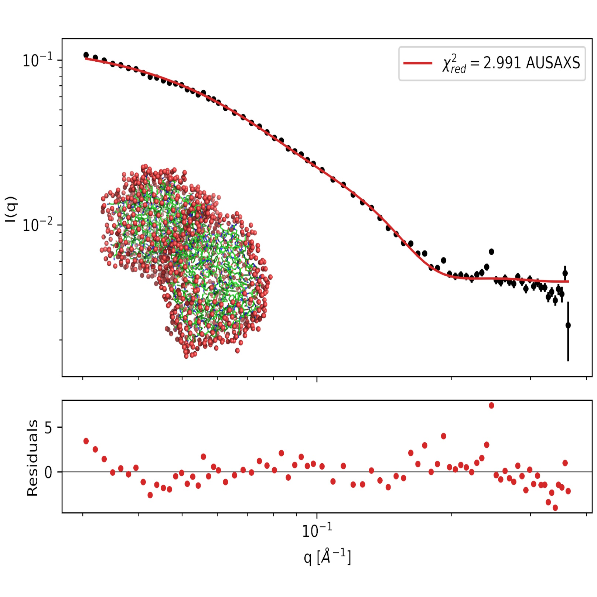
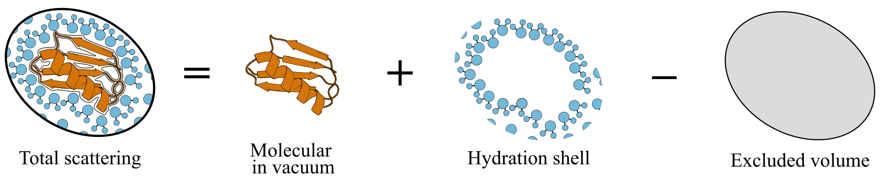
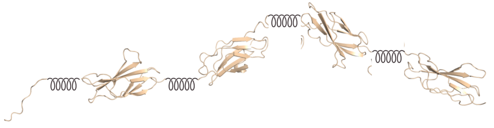
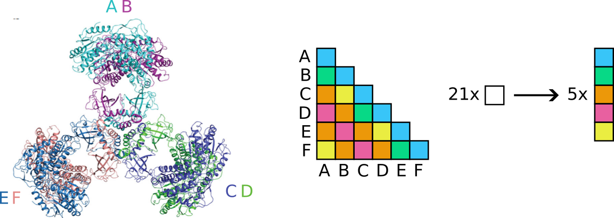

Home
Tutorial: Rigid Body Refinement
Contributors: Kristian Lytje, Jan Skov Pedersen, Andreas Haahr Larsen, Jeppe Breum Jacobsen.

SAXS data on the PA2 protein in solution with a fitted hydration layer.
Before you start
- For an introduction to analysis of SAXS data on proteins in solution, we recommend the proteins tutorial.
- This tutorial uses the graphical interface of AUSAXS (see Part 0 for installation instructions).
- To easily visualize molecular structures, we will use PyMOL (see Part 0 for installation instructions).
Learning outcomes
After completing this tutorial you will:- Know how a SAXS curve is calculated from an atomic structure.
- Know what rigid body modeling is, and when it is the right tool.
- Be able to identify flexible linkers in a structure and refine the resulting rigid bodies against SAXS data.
- Be able to understand and use structural symmetries in rigid body refinements.
- Understand why a good fit is not by itself evidence that a model is correct.
Introductory remarks
Rigid body refinement is for the case where you trust the individual domains of a structure, e.g. from crystallography or AlphaFold, but not the way they are arranged relative to each other. This tutorial explores how rigid body refinement works, and how to use it in practice. We will work through four cases of increasing size, from a single fixed structure to a 36-body symmetric assembly in the final Challenge.
Part 0: Installation
AUSAXS is installed with a single command. Open a command window (Terminal on macOS) and type:
python -m pip install "pyausaxs[all]"
The [all] suffix pulls in the optional plotting and GUI dependencies. This installs a new command, ausaxs, which is the entry point for all the tools.
Start the GUI by running the command:
python -m pyausaxs guiThe window has three tabs across the top:
- SAXS fitter — calculate the scattering from a fixed structure and fit it to data. This is Part I.
- EM fitter — the same, for electron microscopy maps. See the Comparing with Electron Microscopy tutorial if you are interested.
- Rigidbody — the refinement engine. This is Parts II–IV.
Later, we will use PyMOL to visualize the structures. While this is not strictly necessary, it is useful for inspecting the results.
PyMOL comes in two versions: as a free open-source program, and as a paid but more feature-rich program. Either can be used for this tutorial.
To install the free version, run the command:
python -m pip install pymol-open-source
This installs another command, pymol, which opens the PyMOL window. You can also download the paid version from pymol.org.
Part I: Does the structure already fit?
Before refining anything we need to ask a simpler question: how well does this structure already explain my data? Everything the refinement does later is just this calculation, repeated many times.
Only variations in density produce measurable scattering. What a SAXS curve reports is therefore not the absolute density of your sample, but how much it deviates from the surrounding buffer, and this is what a calculation from an atomic structure has to reproduce. This leads to three contributions:
- The protein. Its density follows directly from the atoms in the structure file.
- The excluded volume. A uniform buffer density, filling the entire region we model: the protein together with the hydration shell around it. Subtracting it converts the absolute density above into the excess density that is actually measured.
- The hydration shell. Water packs more densely at the protein surface than in bulk. What survives the subtraction above is this extra density, and it has to be modeled since it is nowhere in the structure file.

The three densities are combined first, and the scattering of the result calculated. In AUSAXS the Debye formula is evaluated over all pairs of scatterers to obtain the scattering, but the spherical harmonic expansion, as used in e.g. CRYSOL, is a popular alternative.
-
Fit a SAXS dataset to a protein structure
- Download the SAXS data for PA1 and the PA1 structure. PA1 is a monomeric pea albumin; the structure is an AlphaFold prediction with the signal peptide removed.
- Open the SAXS fitter tab and load the two files (you can also try dragging them into the window, though this is somewhat unreliable on Linux).
- Leave the settings at their defaults for now: hydration model
radial, excluded volume modelsimple. - Press Run fit. The log pane reports progress, and when it finishes a set of result tabs appears next to it.
- Look at the log and loglog tabs, and at the fit report. Note the value of $\chi^2_{red}$; you should get ~1.7.
- Run the fit a second time without changing anything. The $\chi^2_{red}$ will move slightly: the hydration layer is placed by a stochastic procedure, so repeated fits of the same structure differ a little. Take this as your noise floor: a difference of a percent or two between two models is not enough to judge which is best.
Evidently, the PA1 structure fits the data reasonably well. The $\chi^2_{red}$ is not too far from 1, the fit looks decent, and there are no obvious systematic deviations in the residuals. Given this relatively noisy data, the structure is therefore a good model for the solution conformation of PA1.
Both the hydration shell and the excluded volume can be modeled explicitly, as real particles placed in space, or implicitly, as a mathematical correction to the scattering. AUSAXS writes the explicit ones to the output folder so you can look at them.
-
Hydration shell: Open the generated
model.pdbin PyMOL: the shell AUSAXS placed around the protein is there as dummy atoms. -
Excluded volume: Change the excluded volume model to
grid, re-run, and open the newexv.pdb. Enterhide everything, exvandshow spheres, exvin the PyMOL command line, then load the PA1 structure alongside it to see the grid filling the molecular volume. Thesimpleandfrasermodels are implicit alternatives, differing mainly at wide angles, so expect a similar $\chi^2$. The grid is far slower to evaluate, which is whysimpleis the default — and the one used in rigid body refinement.
PA1 was the easy case. Now a structure where the agreement is bad, which is the whole point of the rest of the tutorial. Download LAR1-4.pdb and LAR1-4.dat, the first four domains of the flexible human leucocyte common antigen-related protein, and fit them as above. You should get $\chi^2_{red} \approx 50$. These are the crystallographic domains, so they are almost certainly right; what the crystal cannot tell us is how they sit relative to each other in solution. Fixing that is a rigid body problem.
What the refinement does with this
A rigid body refinement treats a structure as a small number of rigid bodies connected by flexible linkers. The internal structure of each body is left untouched; only the relative positions and orientations of the bodies are optimized.

The optimizer then proposes a new arrangement of those bodies, runs exactly the calculation you just ran in the SAXS fitter, and keeps the change if $\chi^2_{red}$ improved — a few thousand times over. Everything in the rest of this tutorial is about controlling those proposals: which bodies may move, how far, and what holds them together. Before we get to the LAR1-4 example, we will look at a simpler case: a dimer of the pea albumin PA2.
Part II: Symmetry, and the PA2 dimer
PA2 is a pea albumin that dimerizes in solution. We again have an AlphaFold model of the monomer, and SAXS data on the dimer. The task is to find how the two copies sit relative to each other.
The direct approach is to load two copies of the monomer and refine them as two independent bodies. AUSAXS also lets you declare a symmetry: you load one copy, and state that the assembly has $p2$ symmetry. The second copy is then not a body at all: it is generated on demand from the first by a transformation whose parameters are what gets optimized. This matters for three reasons:
- Fewer parameters. Two free bodies have 12 degrees of freedom, of which 6 are the global placement that SAXS cannot see. A $p2$ symmetry has exactly the 6 meaningful ones (a translation and a rotation) and no redundant ones. The saving grows with the size of the assembly: an icosahedral symmetry regenerates all 60 copies from a single body and a single set of symmetry parameters, where the equivalent free-body refinement would carry 360.
- The symmetry is exact. It holds by construction, at every step, with no room to drift. This is a constraint you are imposing rather than a free result: for a $p2$ you give up nothing, since a single freely-oriented copy has the same freedom as a second independent body, but for larger groups you are ruling out every asymmetric arrangement, including any that might fit better. In exchange you get a far smaller parameter space and correspondingly less room to overfit.
- It is cheaper to evaluate. Declaring a symmetry switches AUSAXS to a symmetry-aware distance calculator, which computes one representative distance histogram per symmetry-equivalent pair of copies instead of all of them. We return to this in Part IV, where it matters a great deal.
The symmetry groups available in AUSAXS are:
| Name | Copies generated | Description |
|---|---|---|
p2 | 1 | A single freely-oriented copy. The symmetry to use for a dimer. |
c3–c12 | 2–11 | Cyclic: copies are generated by repeated rotation about a common axis. |
d2–d12 | 3–23 | Dihedral: a cyclic axis plus perpendicular 2-fold axes. |
dp2–dp12 | 3–23 | Planar dihedral, where all copies are coplanar. |
tetrahedral, octahedral, icosahedral | 11, 23, 59 | The chiral polyhedral rotation groups. |
These can also be composed: p2-p2 is a dimer of dimers, in which the inner and outer relations are optimized independently. This is the looser cousin of
d2, which we will meet in the final Challenge.
-
Refine the PA2 dimer
- Download the PA2 SAXS data and the PA2 monomer structure.
- Open the Rigidbody tab and open both files. The script in the middle panel updates its
loadblock to match. - Click the "View" button next to the Structure field to open the structure pane. This is where all setup work is done.
Expand the Symmetry section, typep2into the Add symmetry to a body field, and press Apply.
The generated copy appears in the preview immediately, andsymmetry p2is listed under Applied elements. - Press Send to script…, review the change, and confirm. You are now back at the script, with the symmetry declaration inserted.
- Edit the parameter_generator block to read:
parameter_generator { iterations 500 sym_translate 20 sym_rotate 1.5 } - Press Validate to check the script parses, then Run refinement. The structure preview updates live as better conformations are found.
- When it finishes, compare the initial and final $\chi^2$. You should see a drop from roughly 1300 to below 5 — and most of that happens within the first few tens of iterations, as you can see in the log.
Two things in that script are worth explaining.
-
Why only
sym_amplitudes? The parameter_generator element sets the maximum size of the moves attempted each iteration.translateandrotatemove the bodies themselves;sym_translateandsym_rotatemove the symmetry parameters. Since the partner is generated from the base body's current position, moving the base body just moves the whole dimer rigidly and changes nothing about the scattering. Leaving those two out sets them to zero, so every step goes into something that can help. -
Units.
translateandsym_translateare in Ångström,rotateandsym_rotatein radians. The 1.5 above is nearly 90°, which is what you want at the start of a search; amplitudes then decay over the run (linearly by default, see decay), so it begins coarse and finishes fine.
Exercises
-
Look through the script and locate the output folder on your disk. What files are present, and why?
-
Open the
initial_state.pdbandfinal_state.pdbfiles in PyMOL and compare the two. What is different?
-
Hide or delete the two entries in PyMOL, and open instead the
trajectory.xyzfile. This is a multi-frame coordinate file, and PyMOL will animate it if you click the "start" button (▸) in the bottom-right corner. How does the dimer move during the refinement? - Look at the rest of the script. What is the purpose of the loop and optimize_once elements? Where is the loop counter?
-
Verify the claim above: real-space moves (
translate,rotate) do not change the dimer. Set those two amplitudes to nonzero, drop thesym_ones, and re-run. To watch it happen, moveupdate structureout of the on_improvement block so the preview refreshes every iteration, not only on accepted moves. Keep it inside optimize_once — why does it have to stay there?
Decomposing an existing assembly
So far we have added a symmetry to a single body. The reverse is also possible: given a structure that already contains all of its copies, AUSAXS can collapse them back into one body plus a symmetry that regenerates the rest. This decomposition is only exact if the copies really are related by the symmetry you claim, so the fit reports a residual RMSD telling you how far off they are, and rejects the conversion if it is too large. We use this again in Part IV.
- Repeat the refinement with the dimer generated by AlphaFold. Since the file already contains both chains, do not declare a symmetry — use the Decompose bodies into a symmetry field in the structure pane instead. What residual RMSD do you get, and what does it tell you about AlphaFold's dimer? You need to send the changes to the script and click Validate to see the RMSD in the log.
-
Now refine the same file without any symmetry, as two independent bodies. For a $p2$ this is the same problem: a single freely-oriented copy has exactly the freedom of a
second free body. Do the two runs reach the same $\chi^2$? The same structure? And how do either compare to what you found starting from the monomer?
Note that nothing here holds the two chains together — there are no constraints, and no symmetry in the second case. They stay in contact because separating them would change the scattering, not because anything forbids it.
Part III: Flexible linkers: the LAR1-4 structure
We return to the LAR structure from Part I. This is a flexible multi-domain protein: the individual domains are well determined, but the crystal conformation is not the solution conformation. Here there is no symmetry to exploit, and the work is instead in deciding where the structure is allowed to bend.
A rigid body refinement returns a single conformation. For a molecule that genuinely samples many states in solution, that conformation is the one whose scattering best resembles the ensemble average, and it need not be a state the molecule actually adopts. The authors of this study found the flexibility of LAR1-4 to be limited, which is what justifies treating it this way. When that is not the case, ensemble modeling methods are the appropriate tool instead.
-
Split a structure into rigid bodies
- In the Rigidbody tab, load LAR1-4.pdb and LAR1-4.dat.
- Start by checking how well it fits the data by using the SAXS fitter. You can do this quickly by clicking the Send to SAXS fitter button.
- Open the structure pane. You get a rotatable Cα trace. Set the colouring under Display to Residue first: sequential domains then take clearly different colours, while a linker shows up as a single smooth gradient running from one to the next.
- Click on each linker you have identified; the residue is marked with a coloured sphere.
- With your residues selected, press Apply next to Split at residues. The structure is re-partitioned and each body is drawn in its own colour. Check in the Bodies list that you got the number of bodies you expected.
-
Bodies that are not tied together will fly apart, since nothing in the SAXS data holds a broken backbone together. Expand Constraints, and with
backbonealready filled in, press Generate; this generates a autoconstrain element. This finds the Cα atoms at the body endpoints and links each neighbouring pair. The connected bodies will be joined by a dashed line in the preview. - Press Send to script… and confirm.
Your script should now look roughly like this. Set the parameter_generator block, and add the select and transform lines:
output output/rigidbody/
load {
pdb LAR1-4.pdb
saxs LAR1-4.dat
split <your residues>
}
autoconstrain backbone
save initial_state.pdb
save trajectory.xyz
parameter_generator {
iterations 200
translate 1
rotate 0.2
}
select random_constraint
transform rigid_transform
print "Initial chi2: {chi2_no_penalty}"
loop
optimize_once
on_improvement
print {
msg "{iteration}/{iterations_total}: Accepted with new chi2 {chi2_no_penalty}"
colour green
}
update structure
save trajectory.xyz
end
end
end
save final_state.pdbYou can validate your splits against these; minor differences are fine.
split 7 99 199 292The three elements that control how a step is taken are:
- parameter_generator: how large a move to generate.
-
select:
which constraint to move around, since AUSAXS uses the constraints themselves as pivots. We use
random_constraint, which picks one at random each step; the wiki lists the alternatives. -
transform:
how the move propagates.
rigid_transformcarries everything connected to the selected body along with it, so the chain stays intact.
Note also the update inside the loop: this is what feeds the live preview.
-
Run it
- Before running: the article this data comes from discards points below $q = 0.0125$ Å$^{-1}$ because of aggregation. Apply that cut with the $q$-slider in the dataset tab, or your numbers will not be comparable to theirs.
- Press Run refinement. 200 iterations will get you most of the way; watch the preview and the accepted-$\chi^2$ messages in the log.
- The authors of the paper ran the optimization 10 times and found $\chi^2$ between 3.7 and 4.3. Does your result land in that range? A single 200-iteration run will typically get you to around 7, so if you want to match the paper you may need more iterations or several runs.
-
The crystal structure is already "L"-shaped; what the refinement changes is the angle between the two arms, which the authors find closes relative to the crystal.
Open
initial_state.pdbandfinal_state.pdbin PyMOL and compare that angle. Does yours close too?
Exercises
-
Variations in $\chi^2$.
- Run it twice more, changing nothing. The result moves around — this is a stochastic search, and one run is a single draw from a distribution rather than the answer. How wide is your spread compared to the 3.7–4.3 the authors report over 10 runs? This is why refinements are quoted as a range rather than a number.
-
The $\chi^2$ is the easy thing to compare. Load the three
final_state.pdbfiles into PyMOL (remember to rename them between runs). Are they identical? If they are, the data determined the arrangement. If they are not, and all three gave a comparable $\chi^2$, then the data could not distinguish between them.
Constraints.
-
During the 200-iteration run, you may have encountered a few steps where $\chi^2$ increased. Why would the optimizer accept a worse conformation?
To examine this, look at the print element and what options it has for formatting the message. Change the message to something more informative, e.g."{iteration}/{iterations_total}: {chi2} ({chi2_no_penalty} + {chi2_penalty})", and re-run the optimization. -
You just saw how the $\chi^2$ is composed of a "no penalty" term and a "penalty" term. What is the penalty, and why is it needed?
To see the effect of the autogenerated backbone constraints, try running the optimization withautoconstrain noneinstead. -
To completely remove the penalty term, you can also add the undocumented
overlap_strength 0element to the script. The overlap (excluded volume) penalty is what keeps the bodies from moving through each other, and setting its strength to zero removes that. What happens to the printed $\chi^2$ values and the structure? Note: this element is only for demonstration purposes, and should not be used in a real refinement. Make sure you remove it before continuing.
Avoiding meaningless results.
- Remove the splits, and reopen the structure pane. This time, pick one of the domains and choose a few points inside of it. Apply the split, and re-run. The domain unravels, and your $\chi^2$ improves. More freedom usually buys some improvement, whether or not the split corresponds to anything real, and nothing in the fit statistic tells you which case you are in. Only your knowledge of the structure does.
Part IV: Flexible symmetries: the PaaZ hexamer
Parts II and III each dealt with one complication: a symmetric assembly of rigid copies, and a single chain that bends. Many real problems have both. PaaZ (SASDGL2) is a bifunctional enzyme from the E. coli phenylacetate degradation pathway, and it has both in an unusually clean form: it assembles into a hexamer with $D_3$ symmetry, and each of its six chains is itself two domains connected by a flexible linker.
Download the PaaZ crystal structure and SAXS data, and verify it yields $\chi^2_{red} \approx 19$.
Step 1: recover the symmetry you already have
You met decomposition in Part II, on a two-chain file. Here the same operation has more to do: six chains collapse into one body plus a $D_3$ symmetry that regenerates the other five.
-
Decompose the hexamer
- Load SASDGL2.pdb and SASDGL2.dat.
-
In the structure pane, type
chaininto Split at residues and press Apply. The Bodies list should showb1throughb6, one per chain. -
Mark all of the bodies (hold Shift or Ctrl while clicking), and expand the Symmetry section.
Enter
d3into the second row, Decompose bodies into a symmetry, and press Convert. -
Five bodies disappear from the list. What remains is
b1plus a fitted $D_3$ symmetry that regenerates the rest, as can be seen by expanding the chevron (▸) next tob1in the body list. The decomposition is not exact, as can be seen from the ~0.8 Å RMSD, but well within tolerance. -
Remove the generated convert_to_symmetry
element from your script, and reopen the structure pane. Verify that using other symmetries (e.g.
c6) gets rejected (though there is actually a single composite symmetry that does work — can you figure out which?). Make sure to putd3back before continuing.Show solution
p2-c3. $D_3$ is by definition a three-fold axis with a perpendicular two-fold, so composing the two reproduces exactly the same six copies. Under optimization they are not equivalent, though: a composite carries two independent sets of symmetry parameters where $D_3$ has one, so it can relax into arrangements $D_3$ cannot reach. Here we know the assembly is $D_3$, so the tighter description is the right one.

Step 2: split a body that already carries a symmetry
As can be seen on the figure, each chain has a large outer domain and a smaller inner domain, connected by a flexible linker. We now want to optimize their relative positions under the constraint of the $D_3$ symmetry.
-
Split the chain at its domain boundary
- Open the structure pane. Start by turning off the symmetric copies under Display to make the preview easier to work with.
- To more easily identify the flexible point, change the coloring to Residue.
- Rotate the preview until you can see the smaller lobe and the backbone leading into it, and mark it for splitting.
- The main Split at residues only acts when the structure is first loaded, and we already used it to split by chain. To perform an additional split, click the chevron (▸) beside Split at residues to reveal Additional splits (an existing body). Highlight the body in the body list, and press Add.
- Expand Constraints and press Generate with
backbone. Two fragments give exactly one constraint. - Send to script… and confirm.
Step 3: refine the two in alternating phases
Everything the GUI writes is an ordinary script, and you can edit it directly. To show what that buys you, we will do something the GUI has no button for:
instead of optimizing all parameters at once, we alternate between two phases:
1. A real-space move that optimizes the flexible linker, and
2. A symmetry move that optimizes the hexamer geometry.
To do this, note that the parameter_generator takes effect whenever it appears in the script, even inside a loop. The same is true of
select, which each phase uses to declare what it moves: a constraint in the real-space phase, and the symmetry itself via
random_symmetry in the symmetry phase.
Exercise
-
Try to write the script yourself before continuing. You will need (i) an outer loop, (ii) two parameter_generator blocks, and (iii) two inner loops.
Tip: you can name the first loop using the syntax
loop <name>, and then repeat it for the secondloop copy <name>usingloop copy <name>(noendis required after copying a loop).
Show solution
loop 2
# phase 1: optimize the flexible linker, keeping the hexamer fixed
print {
msg "Phase 1: optimizing the flexible linker"
color blue
}
parameter_generator {
iterations 30
translate 0.1
rotate 0.1
}
select random_constraint
loop refine
optimize_once
on_improvement
[...]
end
end
end
# phase 2: optimize the hexamer, keeping the flexible linker fixed
print {
msg "Phase 2: optimizing the hexamer"
color blue
}
parameter_generator {
iterations 30
sym_translate 0.1
sym_rotate 0.1
}
select random_symmetry
loop copy refine
endBug alert!
Due to a bug in the sampler, therandom_symmetry selector must be used when optimizing a symmetry shared by multiple
bodies (as here, where it is shared between the inner and outer domain). Only one of them owns the "real" symmetry, and if the other is
selected, nothing happens. This is much more important in the later challenge, where 8 bodies share a symmetry and random_body would
only hit the real one 1/8 of the time.
-
Run it
- Since the structure is already quite good ($\chi^2_{red} \approx 19$), only modest parameter amplitudes are needed — large proposals are likely to be rejected. You should therefore make sure to use small amplitudes and not to run too many iterations, as the structure is quite large and each proposal may take a few seconds to evaluate. The values listed in the solution above are a good starting point, but feel free to experiment with them.
- Press Validate, then Run refinement.
- You should land around $\chi^2_{red} \approx 5$, from a starting value near 19. Most of the improvement arrives in the first few tens of iterations; watch the accepted-$\chi^2$ messages thin out as the run goes on.
- Open
trajectory.xyzin PyMOL and run the animation. What region changes the most?
Exercise
-
The two phases keep the two kinds of move strictly apart. Try the opposite: delete the second phase and put all four amplitudes into one generator running for the
full 120 iterations. Which does better? Do you think this will change with more iterations, or is it a fundamental difference in the search?
Answer
The two-phase approach usually performs better initially, as the symmetry and flexible moves are not competing with each other. With the single-phase approach, both move types would have to improve on the structure simultaneously, which is less likely to happen. However, this also means that the single-phase approach can explore the parameter space more freely and may find a better overall fit given enough iterations.
Challenge: alpha-2-macroglobulin
α-2-macroglobulin (A2M) is a protease inhibitor that circulates as a homotetramer with $D_2$ symmetry: four identical chains of around 1400 residues, each chain a string of domains joined by flexible linkers. When it activates and traps a protease, it undergoes a large conformational change by collapsing around its target.
-
The task
- Refine the native crystal structure against the native SAXS data.
- Get the $\chi^2$ as low as you can, and be able to say where the improvement came from.
Tips
- Splitting by chain gives more bodies than you expect. Only the first four are protein — the rest are glycans, and you should delete them from the Bodies list before going further.
- When you decompose into $D_2$, read the residual RMSD. Expect a couple of Ångström — this is a large, only approximately symmetric crystal structure, not an idealised one. A much larger number means you picked the wrong four bodies.
- Turn off Symmetry copies while you hunt for linkers. Four superimposed chains of 1400 residues is unreadable.
-
There are seven or eight clean boundaries to be found. Look for the points where the chain leaves one domain and enters another — A2M is built from a
chain of compact domains, so they are there once you know to look for them. Coloring by residue number can be helpful here.
Important note after you've identified your points
The structure is large, and for the purpose of this tutorial, we do not want to run too many iterations. For that reason, you should remove all your splits in the residue range 346–908 — these act like a trap for the optimizer, bringing minor improvements at the cost of making the global minimum much harder to reach. - As a starting point for the amplitudes:
translate 0.5,rotate 0.02,sym_translate 1,sym_rotate 0.02. - This structure is a long way from the data — unlike Part IV you are searching, not polishing, so improvements arrive from the very first iterations. Around 60 iterations already shows most of the drop, and you should be able to roughly halve the starting $\chi^2$. Each iteration is expensive at this size, so start small and only scale up once the script does what you want.
A2M also has an activated structure, in which the molecule has collapsed around a trapped protease (not included in the model). Prepare it the same way and refine that against the native data. It starts off far worse, and it will improve, though the enforced symmetry and the linker constraints are strong enough that it does not deform into nonsense. How close does it get to what you reached from the correct starting model? If you had only ever seen this run, what in the output would have told you something was wrong?
Perspectives
The script in the middle panel is the whole interface — the GUI only ever writes into it, and you can save it with the disk icon and re-run it later, either by
loading it back into the GUI or by running it directly from the command line with ausaxs rigidbody myscript.conf.
The full set of elements is documented on the AUSAXS wiki.
All $\chi^2$ values quoted here are from AUSAXS. Other programs may report different numbers and generate different structures.
We have intentionally kept the iteration count low to keep the runs short for this tutorial. In a real refinement, thousands of iterations are required for each run, and multiple runs are required to get a sense of the variance.
For more on the interplay between AlphaFold and SAXS data, see the SAXSAFOLD tutorial.
Help and feedback
Help us improve the tutorials by- Reporting issues and bugs via our GitHub page. This could be typos, dead links etc., but also insufficient information or unclear instructions.
- Suggesting new tutorials/additions/improvements in the SAStutorials forum.
- Posting or answering questions in the SAStutorials forum.